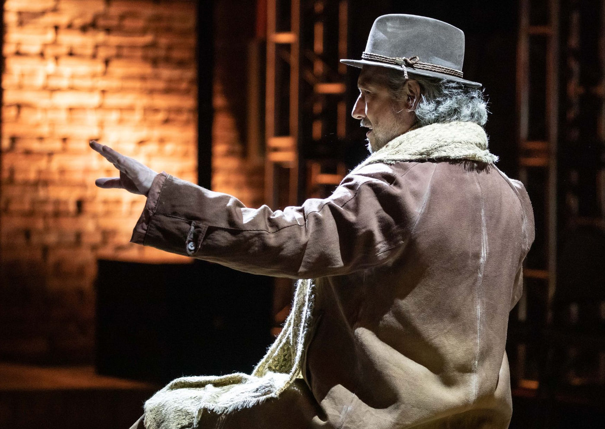

Foto — João Caldas
Teatro
"O Fazedor de Teatro" Retorna com Nova Temporada na Oficina Cultural Oswald de Andrade: Um Espetáculo que Encanta e Provoca Reflexões
A premiada peça "O Fazedor de Teatro", que valeu ao talentoso ator Paulo Marcello indicações no prêmio Shell e Apca, está de volta para uma nova temporada na Of…